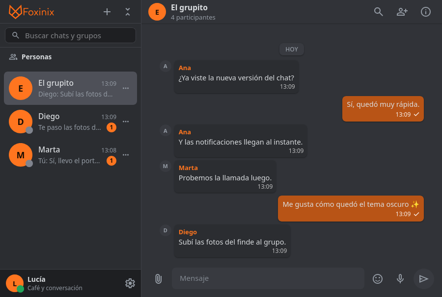

DMs y grupos
Habla a solas o reúne a tu gente. Los grupos tienen roles, administración y avisos claros.
Hecho en casa. Sin anuncios.
Foxinix Chat es un espacio de mensajería privado para hablar, compartir y organizarte sin ruido, sin algoritmos y sin repartir tu vida entre mil aplicaciones.

Todo lo necesario
Las funciones que usas a diario, en una interfaz rápida y sin distracciones. Sin publicidad, sin muros de pago y sin sorpresas.
Habla a solas o reúne a tu gente. Los grupos tienen roles, administración y avisos claros.
Tus conversaciones individuales van cifradas de extremo a extremo, sin interruptores ni pasos extra. La clave se queda en tus dispositivos.
Fotos, videos, archivos y notas de voz con reproductor propio, vista previa y descarga.
Responde con contexto, reacciona con un emoji y fija los mensajes importantes para no perderlos.
Tema claro u oscuro, color de acento, fondo de chat y preferencias que se quedan contigo.
Recibos de lectura claros, bloqueo de usuarios, sesiones seguras y una base de datos cifrada.
Privacidad de verdad
Foxinix nació como un proyecto independiente: un lugar para hablar con tu gente sin anuncios, sin recomendaciones y sin convertir cada mensaje en datos para vender.
Un proyecto casero, hecho con cuidado y sin métricas de engagement.
Empezar es fácil
No necesitas instalar nada. Abre tu navegador, crea tu cuenta y empieza a conversar.
Elige tu usuario, correo y contraseña. Te enviaremos un código para confirmar que eres tú.
Busca por usuario, acepta solicitudes y empieza un DM. También puedes crear un grupo.
Comparte fotos, voz, archivos y reacciones. Instala la app desde el navegador si quieres tenerla a mano.
¿Hablamos?
Entra a Foxinix Chat y descubre una forma más tranquila de estar en contacto.